Najbližšie verejné vystúpenia
Plesy
Koncerty
Festivaly
21
novembra 2026
Najbližšie vystúpenie · Ples
Öregfiúk bálja
sobota
Kultúrny dom, Kürt
Ďalšie verejné vystúpenia
5
dec
2026
Ples
Vadászbál
sobota
Kultúrny dom, Imeľ
31
dec
2026
Ples
Silvester
štvrtok
Kultúrny dom, Komoča
16
jan
2027
Ples
Csemadok
sobota
Kultúrny dom, Nesvady
23
jan
2027
Ples
Manócska óvoda
sobota
Kultúrny dom, Veľký Cetín
30
jan
2027
Ples
Szülői bál
sobota
Kultúrny dom, Tardoskedd
6
feb
2027
Ples
Majthenyis Szülői bál
sobota
Kultúrny dom, Udvard
13
feb
2027
Ples
Iskolabál
sobota
Kultúrny dom, Balony
27
feb
2027
Ples
Hasičský
sobota
Kultúrny dom, Kameničná